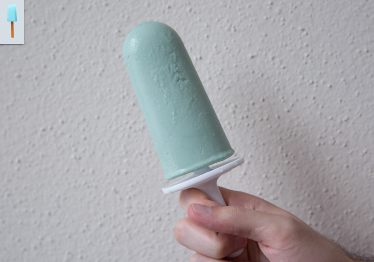

Sea Salt Popsicles

Description
This recipe is taken from the Kingdom Hearts series of games, which
are based on the characters of the Disney universe. It is a simple
but delicious treat to prepare. It is the perfect combination of
both sweet and salty. The popsicles should be prepared well in
advance of when it will be served, as it needs time in the
freezer to set. The quantity of salt is not specified as it is
subjective to taste. Experiment with different batches to find
the perfect balance.
2 cups heavy cream
1 cup milk
1/2cup honey
1 tsp vanilla extract
sea salt
13 drops blue food colouring
3 drops green food colouring
Steps
- In a saucepan, over medium-high heat, combine the heavy cream,
milk and honey.
- Once combined remove the saucepan from the heat and add the
vanilla extract.
- Pour the mixture in a bowl and slowly add the sea salt. Taste
until you are happy with the level of saltiness. It is easy
to overdo it so be careful.
- Finally, add the food coloring. Experiment with colouring to
match the game likeness or to try new colours.
- Place in the refrigerator and allow it to chill for 2 hours.
- After it has cooled, place the cream mixture in the molds and
allow to chill in the freezer overnight.
- Enjoy!